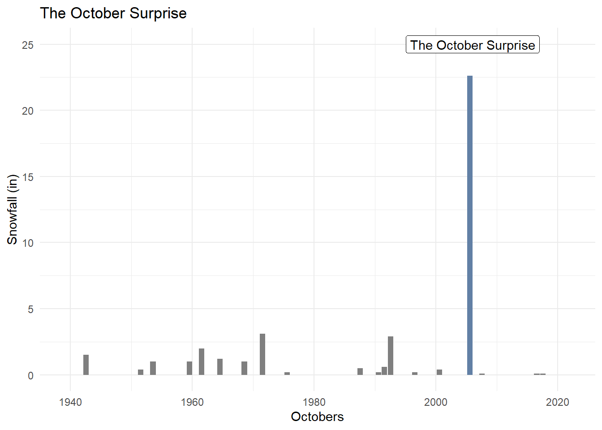
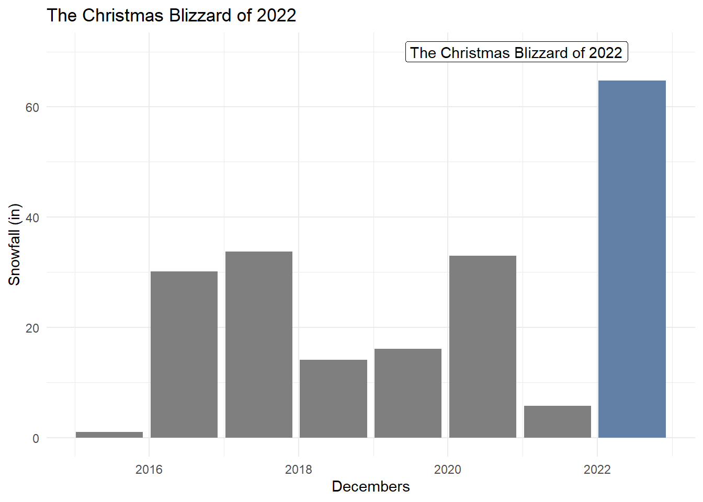

library(tidyverse)
library(knitr)
library(ggridges)
library(viridis)
library(hrbrthemes)Buffalo Blizzards
Introduction
The city of Buffalo frequently finds itself victim to the weather phenomenon known as “Lake effect snow”. Lake effect snow occurs when cold winds and weather systems move across relatively warm bodies of water. The winds create an almost instant sublimation of the water into heavy precipitation; snow. Being positioned next to a very deep lake that maintains much of its temperature throughout the winter season, Buffalo frequently experiences severe blizzards, with snowfall up to 60 inches accumulating over the course of a few days.
In this article we will tidy a dataset from the National Weather Association that provides records of monthly snowfall in Buffalo since 1940. We will will also highlight some of the more extreme blizzard events using this data.
Reading the data
The dataset is structured but not in the best format for analysis. The years and months are organized into seasons and structured into a wide-format.
df <- read.csv('buffalo_weather.csv')
kable(head(df))| SEASON | JUL | AUG | SEP | OCT | NOV | DEC | JAN | FEB | MAR | APR | MAY | JUN | ANNUAL |
|---|---|---|---|---|---|---|---|---|---|---|---|---|---|
| 1940-41 | 0 | 0 | 0 | T | 17.5 | 12.1 | 17.3 | 23.1 | 9.3 | T | 0 | 0 | 79.3 |
| 1941-42 | 0 | 0 | 0 | T | 5 | 7.8 | 31 | 28 | 13.7 | 4.1 | 0 | 0 | 89.6 |
| 1942-43 | 0 | 0 | 0 | T | 8.7 | 26.7 | 16.9 | 17.7 | 10.4 | 5.1 | T | 0 | 85.5 |
| 1943-44 | 0 | 0 | 0 | 1.5 | 13.6 | 1.7 | 3.4 | 24.6 | 10.5 | 2.7 | 0 | 0 | 58 |
| 1944-45 | 0 | 0 | 0 | 0 | 3.9 | 35.1 | 50.6 | 23.3 | 5.8 | T | 2 | 0 | 120.7 |
| 1945-46 | 0 | 0 | 0 | T | 25.2 | 51.1 | 10.7 | 23.5 | T | T | 0 | 0 | 110.5 |
We will first organize the data into a tidy format by breaking the seasons into proper years and months and pivoting into a long format.
df <- df |>
# Rename columns
rename_with(~str_to_lower(.x), .cols = everything()) |>
# Remove duplicate headers
filter(season != "SEASON") |>
# Replace T[race] with zero, convert to numerical, drop empty rows
# We allow blanks to be coerced to NAs
# There is also a really sneaky comma in the data we need to remove
mutate(across(2:last_col(), str_replace, "T", "0")) |>
mutate(across(2:last_col(), str_replace, ",", "")) |> # The comma of '76
mutate(across(2:last_col(), ~ as.numeric(.))) |>
drop_na(2:last_col()) |>
# We don't need annual right now
select(-annual) |>
# Convert to long format
pivot_longer(2:last_col(), names_to = "month", values_to = "snowfall") |>
# Create a new year column by splitting the season column
# Season is still useful so we will keep it
separate(season, into = c("year_1", "year_2"), sep = "-", remove = FALSE) |>
# Correct the ending year format
mutate(season_prefix = str_sub(season, 1,2)) |>
mutate(year_2 = str_c(season_prefix, year_2)) |>
# Assign months across a season to the corresponding years
mutate(year = as.numeric(case_when(
month %in% c("jul", "aug", "sep", "oct", "nov", "dec") ~ year_1,
month %in% c("jan", "feb", "mar", "apr", "may", "jun") ~ year_2
)
)) |>
# Yes this is an ugly hack but the 1900s won't mind
mutate(year = if_else(year == 1900, 2000, year)) |>
# Fix the month names and create a date type column for future flexibility
mutate(month = case_when(
month == "jan" ~ "January",
month == "feb" ~ "February",
month == "mar" ~ "March",
month == "apr" ~ "April",
month == "may" ~ "May",
month == "jun" ~ "June",
month == "jul" ~ "July",
month == "aug" ~ "August",
month == "sep" ~ "September",
month == "oct" ~ "October",
month == "nov" ~ "November",
month == "dec" ~ "December"
)) |>
mutate(date = make_date(year, match(month, month.name), 1)) |>
select(date, season, year, month, snowfall)We will also set the months as factors to be able to sort them properly later.
month_levels <- c(
"January",
"February",
"March",
"April",
"May",
"June",
"July",
"August",
"September",
"October",
"November",
"December"
)
df <- df |>
mutate(month = factor(month, levels = month_levels))kable(head(df))| date | season | year | month | snowfall |
|---|---|---|---|---|
| 1940-07-01 | 1940-41 | 1940 | July | 0.0 |
| 1940-08-01 | 1940-41 | 1940 | August | 0.0 |
| 1940-09-01 | 1940-41 | 1940 | September | 0.0 |
| 1940-10-01 | 1940-41 | 1940 | October | 0.0 |
| 1940-11-01 | 1940-41 | 1940 | November | 17.5 |
| 1940-12-01 | 1940-41 | 1940 | December | 12.1 |
What does typical snowfall look like?
To better understand what extreme snowfall looks like, we must first understand what typical snowfall looks like. We can do this by plotting the distributions of snowfall over our time period per month.

We can already see significant outliers in January and December. Interestingly, the snowfall in October is almost the same as July with one exception; this is one of our blizzards we will explore.
Let’s get a more specific view of the outliers by plotting snowfall for each month.

We can see an increasing trend of extreme snowfall (months with more than 60 inches of snow) since 1977, which coincidentally was the year of one of the most catastrophic blizzards Buffalo has seen.
This correlates with our general understanding of climate change; as mean temperatures rise, the lakes surrounding Buffalo stay warmer and freeze over later, therefore generating more precipitation when winter weather systems move in.
Note that this data represents the snowfall for a given month, which does not necessarily indicate a blizzard occurred; snowfall per day would be more indicative, but we unfortunately do not have that data available.
Instead, we’ll use our domain knowledge to pick out three well-known storms; The Great Blizzard of ’77, The October Surprise, and the Christmas Blizzard of 2022.
The Great Blizzard of ’77
At the time, the Great Blizzard of ’77 was the most significant snowfall event recorded. Winds gusted from 46 to 69 mph, forming snow drifts up to 30-40 feet. Temperatures fell 26 degrees Fahrenheit in the first four hours. There were 23 storm related deaths in Western New York by the time the blizzard subsided.

The October Surprise
As we saw in our distributions, October is generally a snow-free month, hence the name of this next storm. Lake Storm Aphid, or simply the October Surprise, brought hail, ice pellets, and 24 inches of snow accumulation in twenty four hours, from October 12th to October 13th in 2006.

The Christmas Blizzard of 2022
The most recent blizzard occurred between December 23rd and December 27th as an extratropical cyclone created extreme winter storm conditions across North America. In total the storm killed at least 100 people, 41 of them occurred specifically in Buffalo. The lake effect snowfall, over 56 inches across the storm’s duration, explained 82% of the month’s total snowfall and created large drifts that made vehicular and even on-foot transport impossible.
It was described by the National Oceanic and Atmospheric Administration (NOAA) as a “historic arctic outbreak”.

Conclusion
In this article we organized monthly snowfall data for the city of Buffalo as reported by the National Weather Association. We examined typical distributions of snow for each calendar month, then drilled into specific storms, their context, and their impact.